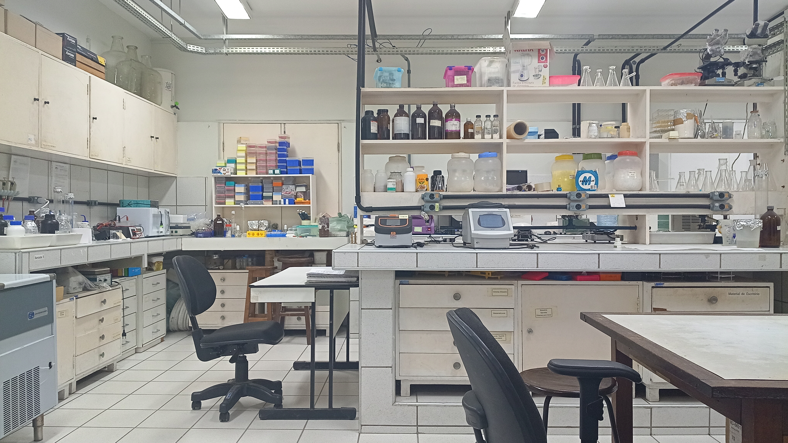
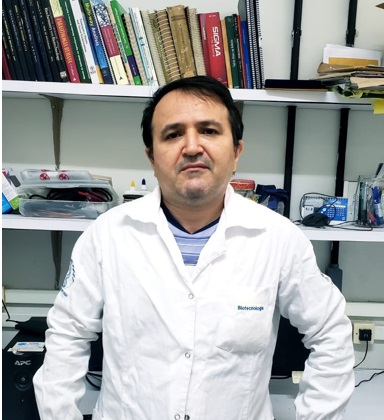
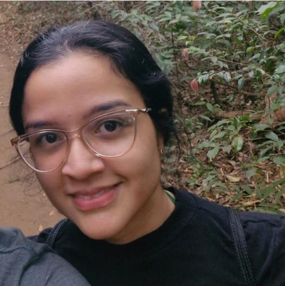
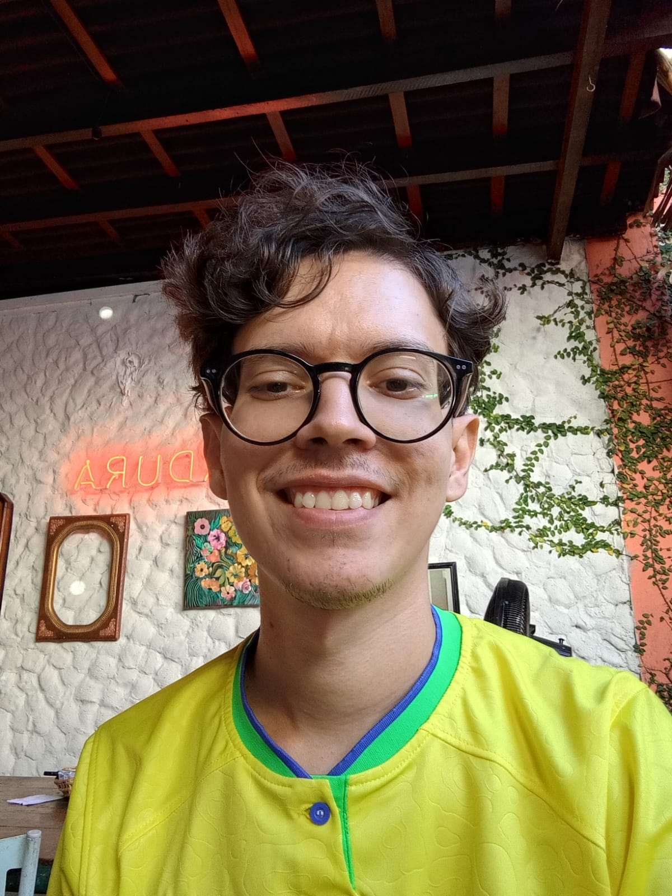
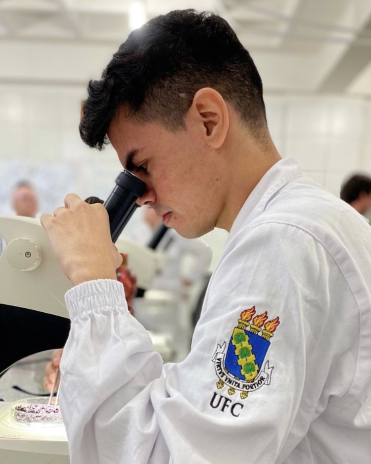

Departamento de Bioquímica e Biologia Molecular | Universidade Federal do Ceará
O Laboratório de Genômica Funcional e Bioinformática (LGFB), vinculado ao Departamento de Bioquímica e Biologia Molecular da UFC, dedica-se ao estudo da biologia celular e molecular de sistemas vegetais.
Nossa missão é integrar análises experimentais e o desenvolvimento de ferramentas computacionais avançadas para compreender a adaptação de plantas a estresses ambientais e bióticos, além de atuar na preservação e melhoria da qualidade pós-colheita de frutos tropicais e espécies de interesse agronômico.

Estudos de expressão gênica em larga escala empregando abordagens de RNA-Seq e validação por PCR em tempo real para elucidação de redes regulatórias em plantas.
Investigação do metabolismo energético mitocondrial, com foco na oxidase alternativa (AOX), equilíbrio redox e biologia molecular focada na resposta a estresses e fisiologia pós-colheita.
Desenvolvimento de pipelines, análise de dados de sequenciamento de nova geração (NGS) e prospecção in silico de macromoléculas com potencial biotecnológico.
O LGFB é parte integrante do Consórcio Internacional de Pesquisas FunCROP (Functional Cell Reprogramming and Organism Plasticity). O laboratório lidera o grupo brasileiro nesta rede, investigando mecanismos moleculares de defesa conservados entre plantas e humanos, sob a vice-coordenação do Prof. José Hélio Costa.
Mantemos estreita colaboração com a iniciativa europeia coordenada pela Profa. Birgit Arnholdt-Schmitt. Nossos projetos conjuntos visam expandir as fronteiras do conhecimento em biologia celular e reprogramação funcional.
Coordenadores do LGFB

Professor Titular e Pesquisador Principal
Professor Titular do Departamento de Bioquímica e Biologia Molecular da UFC e Bolsista de Produtividade do CNPq. Tem foco nas áreas de Bioquímica, Genômica Funcional e Bioinformática. É referência internacional nos estudos sobre a oxidase alternativa (AOX), atuando na identificação de genes associados à adaptação a estresses em culturas como feijão-de-corda, soja e frutos tropicais.

Professora Visitante e Pesquisadora Principal
Doutora em Bioquímica Vegetal e Professora Visitante no Programa de Pós-Graduação em Bioquímica da UFC. Sua trajetória concentra-se nas áreas de Fisiologia e Bioquímica Pós-Colheita de Frutos Tropicais, Genômica Funcional e Bioinformática. Suas pesquisas focam na identificação de genes com aplicação biotecnológica para adaptação a estresses e preservação da qualidade de frutos.
Estudantes de Doutorado
Doutoranda em Bioquímica
Mestre em Bioquímica e graduada em Educação Física. Atualmente é Doutoranda no Programa de Pós-Graduação em Bioquímica da UFC, sob orientação do Prof. José Hélio Costa. Sua pesquisa de doutorado foca na elucidação de mecanismos moleculares de transportadores de membranas durante o desenvolvimento e em condições de estresse na cultura do milho (Zea mays).
Doutoranda em Bioquímica
Bióloga pela UECE e Mestre em Bioquímica pela UFC. É Doutoranda no PPG em Bioquímica da UFC, orientada pelo Prof. José Hélio Costa. Em seu projeto, investiga os mecanismos moleculares, bioquímicos e fisiológicos na resposta de plantas de pitaya quando submetidas a condições de estresse hídrico e salino.
Estudantes de Mestrado
Mestranda
Graduada em Biotecnologia pela Universidade Federal do Ceará (UFC). Durante sua Iniciação Científica, orientada pelo Prof. José Hélio Costa, atuou na análise evolucionária dos genes da oxidase terminal de plastídeo (PTOX) na subfamília Panicoideae. Atualmente integra a equipe como estudante de mestrado.
Bolsistas de Iniciação Científica

Bolsista de Iniciação Científica
Bacharel em Biotecnologia pela UFC e atual estudante de graduação em Ciência de Dados na mesma instituição. Como Bolsista de Iniciação Científica do CNPq, realiza análises transcriptômicas de plantas, incluindo Anacardium occidentale, Selenicereus undatus e Zea mays.

Bolsista de Iniciação Científica
Graduando em Ciências Biológicas (Bacharelado) pela Universidade Federal do Ceará. Como Bolsista de Iniciação Científica do CNPq, sua pesquisa anterior focava na investigação das mudanças proteômicas que ocorrem durante o processo de embebição de sementes de carnaúba.
Produção científica recente do LGFB